ПРОВЕРОЧНАЯ РАБОТА №1
ВАРИАНТ 1
1. К какой языковой семье относится тюркская языковая группа?
1) к индоевропейской
2) к урало-самодийской
3) к алтайской
4) к кавказской
2. Установите соответствие между процессами и тысячелетиями.
ПРОЦЕССЫ
1) окончание ледникового периода, установление климата, близкого к современному
2) зарождение земледелия на юге нашей страны
3) окончательное формирование человека современного типа
ТЫСЯЧЕЛЕТИЯ
A) 40 тыс. лет назад
Б) 25 тыс. лет назад
B) 12-14 тыс. лет назад
Г) 5-6 тыс. лет назад
Запишите буквы, соответствующие выбранным ответам.
3. Укажите народ, предки которого относятся к западной ветви славян.
1) украинцы
2) словаки
3) болгары
4) сербы
4. Прочитайте отрывок из сочинения историка и укажите название народа, трижды пропущенное в тексте.
Нашествием _____ открывается ряд последовательных азиатских вторжений в Россию и Европу... Позднее, в V в., _____ продвинулись... на запад и основались в нынешней Венгрии, откуда доходили в своих набегах до Константинополя и до теперешней Франции. После их знаменитого вождя Аттилы во второй половине V в. сила _____ была сломлена междоусобиями в их среде и восстаниями подчинённых им европейских племён.
1) хазары
2) скифы
3) гунны
4) готы
5. Укажите имена богов восточных славян.
1) Зевс
2) Мокошь
3) Марс
4) Велес
5) Венера
6) Перун
Выберите несколько правильных ответов.
6. Что из перечисленного стало одним из последствий Великого переселения народов?
1) образование Скифского царства
2) разгром Понтийского царства ед- 3) падение Западной Римской империи
4) распад империи Александра Македонского
7. Расположите исторические события в хронологической последовательности.
A) распад Тюркского каганата
Б) возникновение Волжской Булгарии
B) возникновение Боспорского царства
Запишите получившуюся последовательность букв.
8. Рассмотрите изображение и укажите период, когда появились орудия охоты изображённые на рисунке.
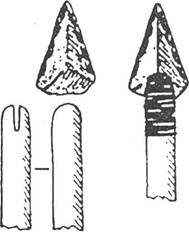
1) палеолит
2) мезолит
3) неолит
4) бронзовый век
Рассмотрите карту «Восточные славяне и их соседи в IV—IX вв.» и выполните задания 9-11.
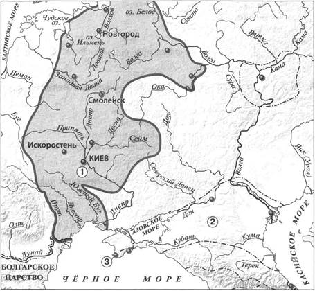
9. Укажите название восточнославянского племенного союза, территория расселения которого обозначена на карте цифрой «1».
1) ильменские словене
2) поляне
3) кривичи
4) вятичи
10. Укажите название государства, образовавшегося в VII в., территория которого обозначена на карте цифрой «2».
Ответ:
11. Укажите название города, основанного древними греками, который обозначен на карте цифрой «3».
Ответ:
12. Впишите пропущенное слово.
Соседская община у восточных славян называлась
13. Прочитайте отрывок из сочинения историка и впишите пропущенное слово.
Волхвы исполняли различные обряды, проводили религиозные церемонии в так называемых капищах, где стояли ____, или кумиры, — скульптурные изображения славянских богов. Наряду с вождями, а позднее князьями волхвы руководили жизнью и племён, и союзов племён, и молодого государства.
14. Укажите слово, пропущенное в схеме.
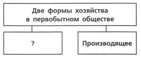
Ответ:
ЗАПОЛНИТЕ ТАБЛИЦУ ОТВЕТОВ
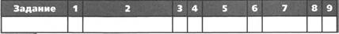
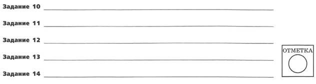
ВАРИАНТ 2
1. К какой языковой семье относится финно-угорская языковая группа?
1) к индоевропейской
2) к урало-самодийской
3) к алтайской
4) к кавказской
2. Установите соответствие между события (процессами, явлениями) и веками.
СОБЫТИЯ (ПРОЦЕССЫ, ЯВЛЕНИЯ)
1) начало Великого переселения народов
2) образование Боспорского царства
3) образование Хазарского каганата
ВЕКА
A) V в. до н.э.
Б) IV в.
B) VII в.
Г) IX в.
Запишите буквы, соответствующие выбранным ответам.
3. Укажите народ, предки которого относятся к южной ветви славян.
1) белорусы
2) поляки
3) чехи
4) болгары
4. Прочитайте отрывок из сочинения историка и укажите пропущенное в тексте имя языческого бога.
С появлением у славян князей, воевод и дружин, в условиях военных походов на первый план вышел бог молнии и грома — непобедимый _____. Со временем он стал главным божеством нарождавшегося государства и слился с более ранними богами.
1) Стрибог
2) Велес
3) Перун
4) Ярило
5. Укажите занятия восточных славян.
1) скотоводство
2) бортничество
3) охота
4) картофелеводство
5) выращивание подсолнечника
6) выращивание маслин
Выберите несколько правильных ответов.
6. Что из перечисленного стало одним из последствий окончания ледникового периода?
1) окончательное формирование человека современного типа
2) появление загонной охоты
3) появление составных орудий труда
4) появление разделения труда между мужчинами и женщинами
7. Расположите исторические события (процессы) в хронологической последовательности.
A) основание первых городов-государств в Северном Причерноморье
Б) окончание ледникового периода, установление климата, близкого к современному
B) выделение из индоевропейских племён балтославянских племён Запишите получившуюся последовательность букв.
8. Рассмотрите изображение и укажите, к какому историческому периоду оно относится.
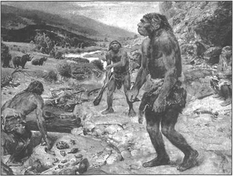
1) палеолит
2) мезолит
3) неолит
4) бронзовый век
Рассмотрите карту «Восточные славяне и их соседи в IV—IX вв.» и выполните задания 9-11.
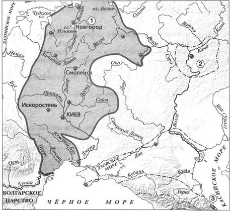
9. Укажите название восточнославянского племенного союза, территория расселения которого обозначена на карте цифрой «1».
1) древляне
2) поляне
3) ильменские словене
4) радимичи
10. Укажите название государства, образовавшегося в IX в., территория которого обозначена на карте цифрой «2».
Ответ:
11. Укажите название города, обозначенного на карте цифрой «3».
Ответ:
12. Впишите пропущенное слово.
Способ обработки земли, при котором ежегодно половина земли остаётся под паром, называется _____.
13. Прочитайте отрывок из сочинения историка и впишите пропущенное слово.
С распадением родовых связей у восточных славян родичи перестали чувствовать своё взаимное родство и в случае нужды соединялись для общих дел уже не по родству, а по соседству. На общий совет, который назывался _____, сходились домохозяева известной округи, и родные друг другу, и неродные одинаково. Соединённые одним каким-нибудь общим интересом, они составляли общину и избирали для ведения общих дел выборных старейшин.
14. Укажите слово, пропущенное в схеме.
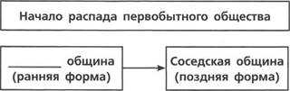
Ответ:
ЗАПОЛНИТЕ ТАБЛИЦУ ОТВЕТОВ
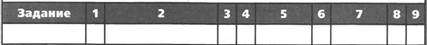
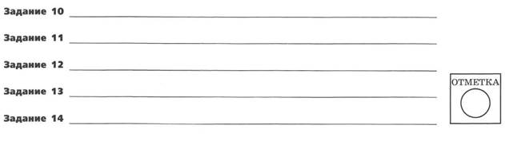
ПРОВЕРОЧНАЯ РАБОТА №2
ВАРИАНТ 1
1. Назовите не менее трёх стоянок древнего человека на территории нашей страны.
1) __________
2) __________
3) __________
2. Приведите не менее двух аргументов, подтверждающих, что окончание ледникового периода повлияло на занятия людей.
3. Прочитайте отрывок из сочинения историка и выполните задания.
Едва отделившись от германского мира, ещё будучи тесно связанными с _____, отделение от которых произошло примерно в V в. до н. э, предки славян вступили в жестокое противоборство с пришельцами из глубин Азии...
Периодически из глубин Азии, прорываясь через широкий проход между южными отрогами Уральских гор и Каспийским морем, проникали в Восточную Европу кочевые орды, и первыми на их пути вставали восточные славяне. Это нескончаемое противоборство уносило тысячи жизней, отвлекало людей от мирного труда, замедляло общее развитие Восточной Европы, которая вставала на пути кочевников и защищала тем самым Запад.
Впишите собирательное название племён, пропущенное в тексте.
В чём, по мнению автора, состояли негативные последствия борьбы с кочевниками для восточных славян? Укажите любые два последствия.
Укажите названия двух любых народов, которые имеет в виду автор данного отрывка, когда пишет о «кочевых ордах».
4. Сравните период становления первобытного общества и период его распада по линиям, указанным в таблице. На основании сравнения сделайте вывод.
|
Линии сравнения |
Период становления первобытного общества |
Период распада первобытного общества |
|
Существование социального неравенства |
||
|
Формы общины |
||
|
Существование союзов племён |
Вывод:
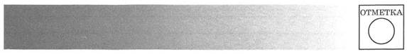
ВАРИАНТ 2
1. Назовите три события, произошедшие в VII в.
1) __________
2) __________
3) __________
2. Приведите не менее двух аргументов, подтверждающих, что наступление ледникового периода повлияло на занятия людей.
3. Прочитайте отрывок из сочинения историка и выполните задания.
Древние греческие и римские писатели сообщают нам о южной степной России ряд известий...
До нашей эры разные кочевые народы, приходившие из Азии, господствовали здесь один за другим, некогда киммериане, потом при _____ скифы, позднее, во времена римского владычества, сарматы...
Некоторые народы, подолгу заживавшиеся в припонтийских степях, например скифы, входили через здешние колонии в довольно тесное соприкосновение с античной культурой. Вблизи греческих колоний появлялось смешанное эллино-скифское население. Скифские цари строили дворцы в греческих городах, скифская знать ездила в самую Грецию учиться...
Впишите имя древнегреческого историка, пропущенное в тексте.
Какие факты приводит автор для подтверждения влияния античной культуры на скифов? Укажите любые два факта.
На какие две группы в соответствии со своими основными занятиями делились скифские племена?
4. Сравните подсечно-огневую и переложную системы земледелия по линиям, указанным в таблице. На основании сравнения сделайте вывод.
|
Линии сравнения |
Подсечно-огневая система |
Переложная система |
|
Районы, в которых использовалась система |
||
|
Основные трудности, связанные с использованием данной системы |
||
|
Возможно ли использование системы без постоянных переходов на новые участки земли? |
Вывод:
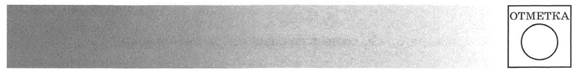